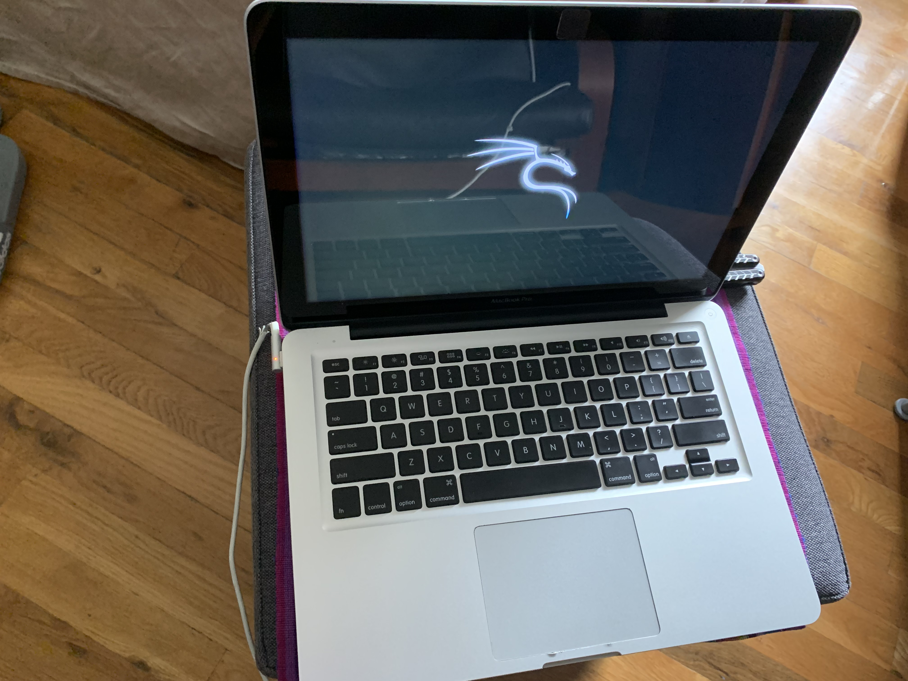

Past Projects
- Prototype "webshooter"


- Restored 2012 MacBook Pro
- Previous Art Website


Looking back, I feel like I should’ve known that being a programmer was where I’d end up. Growing up, my first big endeavor into being a maker was using snap circuits to automate tasks around my house. Receiving the toy sets from age five onward, I could use the premade modular parts to take something silly like making a doorbell for my room and make it a reality. Starting from around age seven, my dad and I would visit any RadioShack we could find and pick out little parts from their shelves in order to make home lights and fans, and the rest of my life has been pretty much the same, just with bigger parts and more complicated projects. Around 2019, I started teaching myself about computer hardware, going much more in depth than I ever had. I built my first PC, learning about the architecture of everyday computers and how big of a part operating systems play in the user experience, something I had never even thought about before. A year later, I started learning about how data is sent through networks and how you can exploit their passages in order to monitor information. I started using a virtual machine within the PC I had built, but I always wanted to have a dedicated device just for hacking. Soon after that, I realized that programming was just as intriguing as hacking, and I couldn’t progress in one until I had learned about the other. Starting out with Python and teaching myself through online courses, I created my first basic scripts as well as a port scanner. Now I am comfortable using Python, and have created multiple websites using HTML/CSS. I enjoy the design aspect behind website development, and I hope to someday pursue a career in programming.
Back to homepage